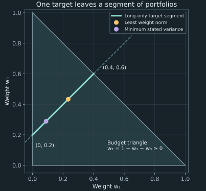

4. Linear systems and identifiable portfolio weights
A client asks for an expected return of 11% from three assets whose expected returns are 5%, 10%, and 15%. The portfolio must invest its entire budget without short selling. A program can find weights meeting that request, but the request does not determine one portfolio. The feasible weights form a whole segment. Choosing a point on that segment requires an additional criterion, and the criterion a numerical library supplies need not be the investor's criterion.
We use this three-asset case to distinguish calculating a portfolio return, solving its linear constraints, and selecting among feasible portfolios. A second case makes two expected returns almost equal. There, a small change in the requested target produces a large change in weights even though the solver's residual is zero in the measured run. Linear algebra describes both the nonuniqueness of a question and the sensitivity of a unique answer.
Source spine: vectors and dot products and linear systems and portfolio choice, playlist positions 12 and 14, with the dot-product and target-return portions of the second-week workshop, position 17. That workshop's covariance and eigenvalue problems are developed in chapter 5. The exact feasible family, solver-contract distinctions, factorization example, and sensitivity constructions here are independently derived teaching additions.
4.1 Ordered vectors connect returns, payments, and positions Recording 12, 12:47
A stock represents an ownership interest in a company. To measure a holding-period return, specify an initial price $p_0\gt0$ and final price $p_1$ in the same currency per share. If no distributions occur, the simple return is $(p_1-p_0)/p_0$. If a cash distribution $H$ is received at the end of the period, the total simple return is $(p_1+H-p_0)/p_0$. Intermediate distributions and reinvestment require their own convention. Price return and total return should not be silently interchanged.
For $n$ assets over a common period, let $R_i$ be asset $i$'s random simple return with finite expectation $\mu_i=\mathbb E[R_i]$, for $i=1,\ldots,n$. Collect those means into the column vector $\boldsymbol\mu=(\mu_1,\ldots,\mu_n)^T$. The superscript $T$ means transpose: it changes a row into a column or a column into a row. In this chapter, $\mu_i$ denotes a one-period expected simple return, rather than a continuous-time drift parameter.
Let $\mathbf w=(w_1,\ldots,w_n)^T$ be the corresponding vector of initial wealth fractions. A fully invested budget requires $\sum_iw_i=1$. With no trading, transaction costs, or intermediate distributions, the portfolio return is $R_p=\sum_iw_iR_i$. Taking expectations term by term gives
\[ \mathbb E[R_p]=\sum_{i=1}^{n}w_i\mu_i =\mathbf w^T\boldsymbol\mu. \tag{4.1} \]The final expression is a dot product: multiply corresponding entries of two equal-length real vectors, then sum. Its result is one scalar. Asset order is part of the data. Reordering both vectors consistently preserves the result; reordering only one generally changes which return belongs to each holding. Equal dimensions are necessary, but correct labels and units are also necessary.
For the three workshop means, take $\boldsymbol\mu=(0.05,0.10,0.15)^T$. Equal weights give mean 0.10. Weights $(0.25,0.25,0.50)^T$ give 0.1125, while $(0.50,0.25,0.25)^T$ give 0.0875. For example, the second calculation is $0.25(0.05)+0.25(0.10)+0.50(0.15)=0.1125$. The difference follows from reallocating wealth toward the higher mean, without establishing anything yet about risk. All three results are reproduced by the chapter program.
The same operation can have different financial units
The discounted-payment calculation from chapter 1 is also a dot product: collect cash amounts into $\mathbf C$ and their discount factors into $\mathbf D$, in identical date order. Then $P=\mathbf C^T\mathbf D$ has currency units because amounts have currency units and discount factors are dimensionless. A different calculation, $\mathbf q^T\mathbf p$, gives the current value of positions when $q_i$ is the number of units held in asset $i$ and $p_i$ is its current price per unit. Those quantities are positions and prices, rather than portfolio weights and expected returns.
A loop or a native array routine can evaluate the dot product. Either must incorporate each paired term. Under the fixed-size arithmetic cost model, the work is linear in vector length. A native implementation can improve constant factors through compiled operations and hardware, but that is not a different asymptotic complexity for this basic operation. Which implementation is faster for a particular size and environment requires a comparable measurement; a shared mathematical formula does not establish a universal speed ratio.
4.2 A target return defines a system, not necessarily a portfolio Recording 14, 0:15
Now reverse (4.1). The means are still given, but the weights are unknown and the requested expected return is 0.11. This is an expectation constraint, not a promise that the realized portfolio will return 11%. Together with the fully invested budget it gives
\[ w_1+w_2+w_3=1,\qquad 0.05w_1+0.10w_2+0.15w_3=0.11. \tag{4.2} \]A matrix organizes the coefficients of these equations. In a matrix $A$ with $m$ rows and $n$ columns, the entry $a_{ij}$ multiplies unknown $w_j$ in equation $i$. Matrix-vector multiplication forms a dot product between each row and the unknown vector. For (4.2),
\[ A\mathbf w=\mathbf b,\qquad A=\begin{pmatrix}1&1&1\\0.05&0.10&0.15\end{pmatrix}, \quad \mathbf b=\begin{pmatrix}1\\0.11\end{pmatrix}. \tag{4.3} \]The dimensions are $2\times3$, $3\times1$, and $2\times1$, respectively. The first row enforces the budget and the second the expected return. The vector $\mathbf b$ is the right-hand side containing the requested values. The matrix representation does not add a third condition merely because a solver accepts matrices as inputs.
Solve for every weight satisfying the equalities
Divide the second equation in (4.2) by 0.05 and subtract the first. This gives $w_2+2w_3=1.2$. Let $t=w_3$ be a free real parameter. Back-substitution then gives the entire family
\[ \mathbf w(t)=\begin{pmatrix}t-0.2\\1.2-2t\\t\end{pmatrix} =\begin{pmatrix}-0.2\\1.2\\0\end{pmatrix} +t\begin{pmatrix}1\\-2\\1\end{pmatrix},\qquad t\in\mathbb R. \tag{4.4} \]Substitution verifies both original equations for every $t$. Conversely, every solution has some third component $t$ and must satisfy the two elimination equations, so (4.4) omits no solutions. This is an exact characterization over real weights. The nonnegative-weight requirement will restrict the parameter in the next section.
The direction $\mathbf z=(1,-2,1)^T$ leaves both constraints unchanged because $A\mathbf z=\mathbf0$. Increasing $t$ buys equal additional fractions of the first and third assets while selling twice that fraction of the middle asset. Its net budget and net expected-return changes are zero. This financial exchange is what the free direction means; it is not a numerical failure to choose enough decimal places.
Consistency and uniqueness ask different questions
The range or column space of $A$ consists of all vectors $A\mathbf w$ attainable by varying real $\mathbf w$. The system is consistent exactly when $\mathbf b$ belongs to that space. The nullspace consists of vectors $\mathbf z$ satisfying $A\mathbf z=\mathbf0$. If $\mathbf w_0$ is one solution, then every $\mathbf w_0+\mathbf z$ with $\mathbf z$ in the nullspace is another. Conversely, subtracting any two solutions gives $A(\mathbf w-\mathbf w_0)=\mathbf0$, so every solution has that form.
It follows that a consistent real linear system has a unique solution exactly when its nullspace contains only zero. The rank is the dimension of the column space, equivalently the number of independent pivot equations after elimination. With $n$ columns and rank $r$, a consistent reduced system has $r$ pivot variables and $n-r$ free variables. Assigning the free variables determines the pivot variables, giving $n-r$ independent nullspace directions. For (4.3), the two rows are independent because the mean row is not a multiple of the all-ones row. Thus the rank is two and there is one free direction, exactly as (4.4) exhibits.
If elimination produces a row with all zero coefficients but nonzero right-hand side, it requires $0=c$ for some $c\ne0$ and the system is inconsistent. If it is consistent and has a nonzero nullspace, scaling a null direction by any real number gives infinitely many solutions. These are statements about real equalities before investment inequalities are imposed.
A rectangular matrix need not imply nonuniqueness. For example, the three equations $x=2$, $y=3$, and $x+y=5$ have two unknowns and one unique solution. The $3\times2$ coefficient matrix has independent columns, and the right-hand side is consistent with them. Replacing the final right-hand side by 6 makes the equations inconsistent. The chapter program verifies the consistent case with a rectangular least-squares routine. A wide $m\times n$ matrix with $m\lt n$, by contrast, cannot have independent columns, so a consistent unrestricted real system cannot be unique.
Solver interfaces reflect these distinctions. NumPy's square-system solve contract requires a square full-rank coefficient matrix; it does not solve the $2\times3$ family by selecting an investment criterion. A rectangular routine can supply an answer under an additional rule. That rule must be understood before its result is treated as a portfolio decision.
4.3 Investment constraints and objectives supply different information Recording 14, 9:21
Return to the original no-short-selling requirement. In the family (4.4), nonnegative first, second, and third weights require $t-0.2\ge0$, $1.2-2t\ge0$, and $t\ge0$. Their intersection is
\[ 0.2\le t\le0.6. \tag{4.5} \]The endpoints are $(0,0.8,0.2)^T$ and $(0.4,0,0.6)^T$. Every point between them is a fully invested, nonnegative portfolio with expected return 11%. At the endpoints one asset is absent; interior points hold all three. A long-only constraint reduces the line of real solutions to a segment without selecting one member.
There is also a useful feasibility test before solving. For nonnegative weights summing to one, $\boldsymbol\mu^T\mathbf w$ is a convex combination of the individual means. It lies between their minimum and maximum: multiply each inequality $\mu_{\min}\le\mu_i\le\mu_{\max}$ by $w_i\ge0$ and sum. Conversely, when the extremes differ, a mixture of an asset at each extreme attains any mean between them. In the running case the attainable long-only target interval is therefore $[0.05,0.15]$. A target outside that interval may have real solutions to the equalities, but every such solution violates at least one nonnegativity constraint.
Inequalities can sometimes restore uniqueness even for a wide equality system. A target equal to 0.15 in this example requires all wealth in the third asset: every positive allocation to either lower-mean asset would reduce the weighted mean. This does not contradict the nullspace result, which concerned unrestricted real solutions. Uniqueness is always relative to the complete feasible set.
A rectangular routine selects according to its own rule
NumPy's lstsq documentation specifies a least-squares rule: minimize the Euclidean length of the residual $\mathbf b-A\mathbf w$. If several weights minimize it, select the one with smallest Euclidean length. For a real vector $\mathbf x$, that length is $\|\mathbf x\|_2=(\sum_i x_i^2)^{1/2}$. Since (4.3) is consistent, its minimal residual is zero. The remaining selection rule minimizes $\|\mathbf w\|_2$ among the exact solutions, up to numerical evaluation.
Square root is increasing on nonnegative numbers, so minimizing the length is equivalent to minimizing its square. Substituting (4.4) gives
\[ \|\mathbf w(t)\|_2^2=(t-0.2)^2+(1.2-2t)^2+t^2 =6t^2-\frac{26}{5}t+\frac{37}{25}. \tag{4.6} \]Its derivative is $12t-26/5$ and its second derivative is 12, so the unique minimum occurs at $t=13/30$. This produces weights $(7/30,1/3,13/30)^T$, approximately $(0.23333333,0.33333333,0.43333333)^T$. It happens to satisfy the nonnegativity bounds in this example. The routine itself is not enforcing those bounds, and an arbitrary least-norm solution need not do so.
Minimum weight norm is not generally minimum return variance
To exhibit the difference, add an explicit teaching model of risk. Suppose the three returns are independent with standard deviations 0.10, 0.10, and 0.20 over the same period. For independent finite-second-moment returns, the expectation of the product of two distinct centered returns factors into a product of zero means. Expanding the square of the centered portfolio return therefore leaves only the three weighted variances:
\[ V(\mathbf w)=\operatorname{Var}(R_p) =0.01w_1^2+0.01w_2^2+0.04w_3^2. \tag{4.7} \]Here $V$ is a variance criterion, not a price. This independence model is an original construction to separate two selection rules. Chapter 5 removes independence and derives the covariance terms that survive in the general case.
Within the same feasible family, substitution gives $V(\mathbf w(t))=[9t^2-(26/5)t+37/25]/100$. Its derivative vanishes at $t=13/45$, and its positive second derivative gives a unique minimum. This parameter lies inside (4.5), so the constrained minimum has weights $(4/45,28/45,13/45)^T$. Its variance is approximately 0.007288888889, compared with 0.009166666667 at the least-weight-norm choice. Both portfolios meet exactly the same budget and target mean.
The solver's default rule has not failed. It has solved a different minimization problem. With all three variances equal and zero covariances, a variance objective would be proportional to the squared weight norm, so those two criteria would agree. Without that special structure or another stated justification, least weight norm is an algorithmic selection rule, rather than an established investor preference.

The source's minimum-variance portfolio problem makes this missing objective explicit: among portfolios meeting a target, choose one with least return variance. That is a specified preference for dispersion, not a universal definition of risk. Tail-loss, utility, and other objectives can select differently. The full covariance model follows next, and the later Markowitz chapters derive the frontier and its efficient portion under stated assumptions. Meeting an expected-return target alone establishes neither a guaranteed outcome nor an optimal risk–return tradeoff.
4.4 Solve a square system by elimination, then recognize its factorization Recording 17, 16:40
The workshop first restricts attention to two assets, with expected returns 0.05 and 0.10, and asks for target 0.08. The budget and target equations now have two unknowns:
\[ \begin{pmatrix}1&1\\0.05&0.10\end{pmatrix} \begin{pmatrix}w_1\\w_2\end{pmatrix} =\begin{pmatrix}1\\0.08\end{pmatrix}. \tag{4.8} \]Subtract 0.05 times the first equation from the second. The first coefficient cancels and the remaining equation is $0.05w_2=0.03$. Thus $w_2=0.6$ and the first equation gives $w_1=0.4$. Both satisfy the nonnegative-weight constraint. The distinction from (4.3) is not the choice of programming language: these two independent equalities now determine two unknowns.
Record elimination once, then solve triangular equations
For a square coefficient matrix, elimination can be represented as a product of simpler matrices. In this example define
\[ L=\begin{pmatrix}1&0\\0.05&1\end{pmatrix},\qquad U=\begin{pmatrix}1&1\\0&0.05\end{pmatrix}. \tag{4.9} \]Multiplication verifies $LU=A$, where $A$ is the coefficient matrix in (4.8): its second row is 0.05 times the first row of $U$ plus the second row of $U$. The matrix $L$ is lower triangular, meaning its entries above the diagonal vanish; $U$ is upper triangular, with entries below the diagonal zero. This factorization records the elimination multiplier 0.05.
To solve $LU\mathbf w=\mathbf b$, introduce the intermediate vector $\mathbf y=U\mathbf w$. Solve $L\mathbf y=\mathbf b$ first. Its first row gives $y_1=1$, and its second gives $0.05y_1+y_2=0.08$, hence $y_2=0.03$. Next solve $U\mathbf w=\mathbf y$ from the bottom row upward: $w_2=0.03/0.05=0.6$, followed by $w_1=1-w_2=0.4$. These two steps are called forward and backward substitution. No full inverse matrix is needed.
General elimination may need to exchange rows to obtain a usable nonzero pivot, the coefficient by which the current elimination step divides. An invertible matrix can have a zero in its first pivot position; for example, the first row of $\begin{pmatrix}0&1\\1&1\end{pmatrix}$ cannot be used for that first division. Swapping its rows resolves that problem. A permutation matrix $P$ records row exchanges, and a pivoted factorization can be written $PA=LU$. Different texts place $P$ or its inverse on the other side; the defining equation specifies the convention.
Boyd and Vandenberghe, appendix C.2–C.3, printed pages 664–668, develop triangular substitution and factor–solve methods for larger systems. The local calculation above exposes the mechanism in the smallest financial example. NumPy's solve documentation identifies the LAPACK _gesv routine underlying its general square solve; using the interface does not require constructing $A^{-1}$ explicitly.
Factorization cost and repeated targets are different workloads
For a dense $n\times n$ system, each elimination stage updates a trailing square submatrix. When its side length is $j$, updating its entries uses approximately $2j^2$ arithmetic operations if a multiplication and subtraction are counted separately. Summing these updates for $j=1,\ldots,n-1$ gives $(n-1)n(2n-1)/3$, whose leading term is $2n^3/3$. Pivot searches and divisions add lower-order work in this standard dense method. This explains the cubic factorization cost; sparsity or other structure can change the workload.
Once the factors are available, each triangular solve computes one component using previously determined components. Summing the row lengths gives quadratic work. For $K$ different right-hand sides sharing the same coefficient matrix, factor reuse therefore has order $O(n^3+Kn^2)$, rather than refactoring for every target. Reuse applies only when the matrix stays fixed: changing the asset means changes the second row and may require a new factorization.
The numerical contract is just as important as that cost advantage. A square full-rank problem has a unique real solution, while a singular system does not. The companion demonstrates rejection of a nonsquare matrix and a singular example. A nearly singular matrix can still yield a returned solution. Whether that answer is sensitive to uncertain inputs requires the next analysis, rather than an inference from the absence of an exception.
4.5 A small residual does not measure uncertainty in the inputs Recording 14, 18:55
Consider two assets with expected returns 0.1000 and 0.1001, and a requested target of 0.10005. This original teaching case isolates the conditioning mechanism mentioned in the source. Subtracting 0.1000 times the budget equation from the return equation gives $0.0001w_2=0.00005$. The unique solution is $(0.5,0.5)^T$. Increasing only the target to 0.10006 gives $0.0001w_2=0.00006$, hence weights $(0.4,0.6)^T$.
The target changed by 0.00001 while each weight changed in magnitude by 0.1. Both answers are feasible and exactly solve their respective mathematical problems. The measured NumPy run returns these values to displayed precision, with computed residual zero in both cases. That is consistent with substantial input sensitivity; the solver did not have to produce a wrong answer for the sensitivity to matter.
Derive the sensitivity in the quantity being requested
For two distinct expected returns $\mu_1$ and $\mu_2$ and target $g$, eliminate the first weight to obtain
\[ w_2(g)=\frac{g-\mu_1}{\mu_2-\mu_1},\qquad w_1(g)=1-w_2(g),\qquad \frac{d w_2}{dg}=\frac1{\mu_2-\mu_1}. \tag{4.10} \]This formula is exact for the equality solution. When the two means nearly coincide, a small target change requires a large reallocation because exchanging one asset for the other changes expected return only slightly. For the stated gap of 0.0001, the derivative is 10,000. If the means are held exact and the target uncertainty is bounded by $\varepsilon$, the second weight's uncertainty is bounded exactly by $\varepsilon/0.0001$. To bound that weight error by 0.01, the target error must be at most 0.000001. These conclusions do not account for uncertainty in the two means themselves.
With nonnegative weights, the target must lie between the two means. An uncertain target interval extending outside that range includes requests with no long-only solution. Higher numerical precision cannot make an infeasible target feasible or infer which target within an uncertainty interval is correct. Additional restrictions or a changed objective can choose a more robust decision, but that is a different decision problem.
What does a residual establish?
For a computed candidate $\widehat{\mathbf w}$, define its residual $\mathbf r=\mathbf b-A\widehat{\mathbf w}$. It measures how far the candidate's constraint values differ from the supplied right-hand side. Rearranging gives $A\widehat{\mathbf w}=\mathbf b-\mathbf r$, so the candidate exactly solves a problem whose right-hand side has been changed by $-\mathbf r$ in exact arithmetic. The computed residual is itself evaluated in floating point, so even that diagnostic has a numerical scale.
A small residual is useful implementation evidence. It does not establish that $A$ and $\mathbf b$ represent the true financial inputs. Nor does it establish that solving a nearby input problem gives a nearby weight vector. Chapter 2's near-parallel equations illustrate the same distinction; the present example expresses it directly in expected-return targets and allocations.
A normwise bound generalizes the two-asset calculation
For a nonsingular square $A$, let $A^{-1}$ denote its inverse. Define the induced Euclidean matrix norm by $\|A\|_2=\max_{\|\mathbf x\|_2=1}\|A\mathbf x\|_2$, the largest output length from a unit-length input. The corresponding condition number is
\[ \kappa_2(A)=\|A\|_2\|A^{-1}\|_2. \tag{4.11} \]Keep $A$ fixed and suppose $A\mathbf w=\mathbf b$ with $\mathbf b\ne\mathbf0$. If the right-hand side changes by $\delta\mathbf b$, the solution changes by $\delta\mathbf w=A^{-1}\delta\mathbf b$. The norm definition gives $\|\delta\mathbf w\|_2\le\|A^{-1}\|_2\|\delta\mathbf b\|_2$. Also $\|\mathbf b\|_2\le\|A\|_2\|\mathbf w\|_2$. Combining these two inequalities proves
\[ \frac{\|\delta\mathbf w\|_2}{\|\mathbf w\|_2} \le\kappa_2(A)\frac{\|\delta\mathbf b\|_2}{\|\mathbf b\|_2}. \tag{4.12} \]This is a worst-direction bound for right-hand-side perturbations in the chosen norm. It does not claim that every perturbation attains the bound, or cover changes in $A$ without additional analysis. A large condition number signals possible amplification. Whether that amplification is material depends on the size and direction of the input uncertainty and the accuracy required of the weights.
For the near-equal-mean matrix, numpy.linalg.cond gives approximately 20,200.200050502 in its default Euclidean norm. Multiplying the return equation and its right-hand side by 100 leaves the solution unchanged but changes that normwise condition estimate to approximately 20,220.009950551. Equation scaling changes how a norm measures perturbations across rows. Input uncertainties must be converted consistently as well; the two-asset formula (4.10) provides a directly interpretable allocation sensitivity.
Use singular values for a general matrix
Define $s_{\max}=\max_{\|\mathbf x\|_2=1}\|A\mathbf x\|_2$ and $s_{\min}=\min_{\|\mathbf x\|_2=1}\|A\mathbf x\|_2$, the extreme singular values. Nonsingularity makes $s_{\min}\gt0$. Substituting $\mathbf y=A\mathbf x$ in the inverse norm shows $\|A^{-1}\|_2=\max_{\mathbf x\ne\mathbf0}\|\mathbf x\|_2/\|A\mathbf x\|_2=1/s_{\min}$. Thus $\kappa_2(A)=s_{\max}/s_{\min}$. NumPy uses a singular-value decomposition for the default condition-number calculation.
An eigenvalue $\lambda$ instead satisfies $A\mathbf v=\lambda\mathbf v$ for some nonzero eigenvector $\mathbf v$. Eigenvalue magnitudes do not generally give the condition number. For the matrix $\begin{pmatrix}1&100\\0&1\end{pmatrix}$, the characteristic determinant is $(1-\lambda)^2$, so both eigenvalues are one. Their ratio is one, but the computed Euclidean condition number is approximately 10,001.999900020. The discrepancy is a concrete counterexample to a general eigenvalue-ratio formula.
For symmetric positive-definite matrices, the Euclidean condition number does equal the ratio of largest to smallest eigenvalue. Chapter 5 establishes that special case after developing covariance geometry. Applying its formula to every constraint or Lagrangian matrix would discard a hypothesis that matters. Likewise, no single condition-number threshold can certify financial reliability without an input-error scale and an output-accuracy requirement.
4.6 Executable laboratory: inspect the solver's contract and its answer
Run python code/ch04_linear_systems.py after installing NumPy. The recorded execution uses NumPy 2.2.6 with Python 3.13.5. The program contains only synthetic inputs and performs no network or file operations. Its main function prints the checks and results; its small numerical helpers return values or raise exceptions. The complete source is the reproducible implementation, while the execution record binds its digest, environment, and output.
The square-solve wrapper accepts one nonempty real square coefficient array and one one-dimensional right-hand side of matching length. It converts them to floating-point arrays and rejects nonfinite entries. Objects that cannot be converted to numerical arrays can fail during conversion. Singular-system behavior is delegated to NumPy. The contract is intended for moderate numerical scales; it is not a proof against overflow, underflow, or all failures of numerical rank determination.
def solve_square(a, b):
"""Moderate finite real inputs, one square system and one RHS vector."""
a = np.asarray(a, dtype=float)
b = np.asarray(b, dtype=float)
if a.ndim != 2 or a.shape[0] != a.shape[1] or a.shape[0] == 0:
raise ValueError('a must be a nonempty square matrix')
if b.shape != (a.shape[0],):
raise ValueError('b must be a matching one-dimensional vector')
if not np.isfinite(a).all() or not np.isfinite(b).all():
raise ValueError('data must be finite')
return np.linalg.solve(a, b)The full file imports NumPy as np. Requiring a one-dimensional right-hand side avoids silently switching the helper to a batched or multiple-right-hand-side calculation. NumPy's underlying interface supports more shapes; this wrapper deliberately specifies one system. Its successful return does not impose weight nonnegativity or select an economic objective.
Compare the library with an exact family and local elimination
The program uses Fraction to verify (4.4) and the feasibility interval exactly for selected rational parameters. It checks that the two-by-two library solution agrees with the independently derived weights and verifies $LU=A$ by multiplication. It then calls the rectangular least-squares routine separately, compares its output with the analytic least-norm point, and verifies the original constraints by multiplying $A\mathbf w$.
Inspect that multiplication even when the routine returns a field named residuals. The documented lstsq residual array is empty for an underdetermined system and in some rank-deficient cases. An empty array is an interface condition, not an assertion of exact consistency. For the running family, the program independently evaluates the residual norm and confirms the target and budget to numerical tolerance. It also checks a consistent tall system and demonstrates that the square solver rejects the wide input.
The risk comparison is computed with exact fractions under the stated independence model. It confirms that two different objective functions select two different feasible portfolios. The residual/conditioning experiment then keeps the near-equal-mean matrix fixed and changes only its right-hand side. Exact fractions reproduce the two weight pairs, while the numerical program reports their computed residual and condition number.
leastnorm: variance=0.009166666667
minimumvariance: variance=0.007288888889
near means, target=0.10005000: w=[0.5 0.5], residual=0.000000000e+00
near means, target=0.10006000: w=[0.4 0.6], residual=0.000000000e+00
weight sensitivity per unit target=10000.0
target uncertainty allowed for weight error .01=0.000001000This abridged output retains the relevant measured values; the full record includes the weights, matrix diagnostics, and library version. Last-digit floating-point values can differ across platforms. The important check is whether the candidate satisfies its declared problem to an appropriate tolerance and whether its sensitivity meets the financial requirement. Exact agreement with these printed diagnostics is not a substitute for those questions.
The figure's generator additionally needs Matplotlib. It computes the segment from the same constraint family and asserts its budget, target, and weight bounds at every plotted point. It marks the two analytically derived objective choices. Those checks connect the figure to the mathematics; the proofs above establish results for all feasible parameters, rather than only the plotted sample.
4.7 Limits of the constraint and conditioning analysis
The expected returns are supplied inputs for a common horizon. This chapter does not estimate them or guarantee realized returns. Its three-asset family identifies every real solution of two specified equalities and then applies nonnegativity. Transaction costs, position limits, integer holdings, borrowing terms, and other investment requirements would change the feasible set.
Least-squares and least-norm criteria solve well-defined numerical problems. Their financial interpretation must be supplied separately. The minimum-variance counterexample assumes independent returns only to expose a difference between objectives; the next chapter develops general covariances. Neither an equality solver nor its residual reports a complete investor preference or a distribution of future losses.
The condition-number bound holds for fixed $A$ and perturbations in the stated norm. It is a diagnostic of possible amplification, rather than an estimate of actual input uncertainty or a universal verdict about trustworthiness. The two-asset derivative gives a sharper financial interpretation for its particular target perturbation. The implementation checks are finite examples, while the local algebra establishes the general family and sensitivity claims under their hypotheses.
4.8 Exercises with worked solutions
Use decimal-return units throughout. Separate the equality constraints, investment inequalities, objective, and numerical evidence before drawing a conclusion.
Exercise 4.1: dimensions do not establish correct alignment
Mechanism: labels and units. For asset means $(0.05,0.10,0.15)$, compute the expected return at weights $(0.5,0.25,0.25)$. A data transformation reverses the weight order but leaves the mean vector unchanged. What changes? Explain why reversing both vectors consistently would be different, and distinguish this return dot product from a position-value dot product.
Solution
The original mean is $0.5(0.05)+0.25(0.10)+0.25(0.15)=0.0875$. Reversing only the weights gives $(0.25,0.25,0.5)$ and mean 0.1125. Both inputs have the correct length, so a dimension check cannot detect that the holdings have been attached to different assets.
Reversing both vectors preserves each weight/mean pair. Their products occur in a different order, leaving the exact sum unchanged. Asset labels should therefore accompany any reordering. In a position-value dot product, each pair instead contains a number of asset units and a current currency price per unit. Its result has currency units; the expected-return dot product has return units because the weights are dimensionless fractions. Interchanging the two quantities would change the question.
Exercise 4.2: characterize all long-only solutions
Mechanism: a null direction and feasible interval. Derive all weights satisfying a unit budget and target 0.11 for the three running means. Apply nonnegativity and identify the endpoints. Explain why obtaining one answer from a numerical routine does not prove it is the only feasible portfolio.
Solution
Divide the return equation by 0.05 to get $w_1+2w_2+3w_3=2.2$. Subtract the budget equation to obtain $w_2+2w_3=1.2$. Set $w_3=t$. Then $w_2=1.2-2t$ and $w_1=1-w_2-w_3=t-0.2$. Substitution verifies both constraints, and every solution must follow these elimination steps.
Nonnegativity gives $t\ge0.2$ and $t\le0.6$, with $t\ge0$ redundant. At the first endpoint the weights are $(0,0.8,0.2)$; at the second they are $(0.4,0,0.6)$. The difference between any two family members is a multiple of $(1,-2,1)$, whose budget and return effects are both zero. The routine can select a member, but that output does not remove the null direction. An additional criterion or restriction is needed to choose one.
Exercise 4.3: qualify a uniqueness statement
Mechanism: equality rank versus the full feasible set. Assess these statements: “Every rectangular system is nonunique” and “Two equalities in three unknowns can never identify a unique long-only portfolio.” Give a concrete qualification or counterexample for each.
Solution
The first statement is false. The rectangular system $x=2$, $y=3$, $x+y=5$ has a unique solution because the first two rows determine both unknowns and the third is consistent with them. Its matrix has two independent columns. Changing the third right-hand side to 6 instead gives no solution. Rectangular dimensions alone do not establish consistency or nonuniqueness.
For a consistent wide equality system with two rows and three unknowns, the nullspace has positive dimension, so there are infinitely many unrestricted real solutions. The second statement, however, includes long-only inequalities. In the running three-asset case, target 0.15 is attained by $(0,0,1)$ alone under nonnegative weights summing to one. Any positive weight on a lower-mean asset would lower the mean. Thus the equalities are nonunique over real weights while their intersection with the investment constraints can be a single point.
Exercise 4.4: turn a weight-accuracy requirement into an input requirement
Mechanism: financial sensitivity. Two expected returns are known exactly as 0.1000 and 0.1001. The target is 0.10005, with deterministic uncertainty at most 0.00001. Characterize the possible equality-solution weights. What tighter target bound is sufficient to keep the second weight within 0.01 of its central value? Can a smaller solver residual supply that bound?
Solution
The second weight is $(g-0.1000)/0.0001$. The target interval is $[0.10004,0.10006]$, so the second weight lies in $[0.4,0.6]$. The first weight is one minus it, giving paired weights along the segment between $(0.6,0.4)$ and $(0.4,0.6)$. Each remains long-only.
The central second weight is 0.5. Since its exact change is the target change divided by 0.0001, a target error bound of $0.01(0.0001)=0.000001$ is sufficient and sharp for this specified perturbation. A smaller residual only establishes more accurate satisfaction of the selected numerical target. It cannot reduce uncertainty about which target value is intended. The conclusion would also need revision if the asset means were uncertain.
Exercise 4.5: identify the criterion hidden in a default solution
Mechanism: algorithmic selection versus portfolio risk. A least-squares routine returns $(7/30,1/3,13/30)$ for the target-0.11 family. Show why it is the minimum-weight-norm member. Under independent returns with variances 0.01, 0.01, and 0.04, derive the minimum-variance member and compare the objectives. Under what special variance structure would these two rules coincide?
Solution
In the exact family, squared weight norm is $6t^2-(26/5)t+37/25$. Its derivative vanishes at $t=13/30$, and its positive second derivative proves a unique minimum. Substituting this parameter yields the returned weights. This answers the routine's minimum-length selection rule among zero-residual solutions.
The variance objective instead equals $[9t^2-(26/5)t+37/25]/100$. Its derivative vanishes at $t=13/45$, again with positive curvature. This lies in the feasible interval and gives $(4/45,28/45,13/45)$. The exact-fraction computation gives variance approximately 0.007288888889 there, compared with 0.009166666667 at the minimum-norm weights.
The difference comes from assigning the third squared weight four times the variance coefficient of the others. If all individual variances were the same positive value and all cross-covariances zero, variance would be that common value times squared weight norm. Their minimizers would then agree on any common feasible set. That is a stated financial structure, rather than a general property of least-squares software.
Exercise 4.6: disprove a condition-number shortcut without a full decomposition
Mechanism: eigenvalues versus singular-value geometry. Let $B=\begin{pmatrix}1&100\\0&1\end{pmatrix}$. Its two eigenvalues are one. Verify its inverse directly, then use the unit vector $\mathbf e_2=(0,1)^T$ to obtain a lower bound on $\kappa_2(B)$. Explain why an eigenvalue ratio of one cannot establish that this matrix is well-conditioned.
Solution
Multiplication verifies $B^{-1}=\begin{pmatrix}1&-100\\0&1\end{pmatrix}$. Applying $B$ to $\mathbf e_2$ gives $(100,1)^T$, while applying its inverse gives $(-100,1)^T$. Each has Euclidean length $\sqrt{10001}$. Since an induced norm maximizes over all unit inputs, both $\|B\|_2$ and $\|B^{-1}\|_2$ are at least this length. Their product is therefore at least 10,001.
The program's computed condition number, approximately 10,001.999900020, is consistent with that lower bound. The eigenvalue ratio gives one because it describes only the scaling along eigenvectors, whereas the norm measures the largest stretch over every direction. This nonsymmetric matrix lacks the hypotheses under which eigenvalue and singular-value ratios coincide. A condition diagnostic must state its matrix class and norm before it is used to interpret numerical sensitivity.
Primary sources and source boundaries
- NPTEL, vectors and dot products, playlist position 12: return units, asset means and weights, ordered vectors, dot-product pseudocode, and cash-flow/position valuation. Runtime and reusable notation are distinguished explicitly in this rewrite.
- NPTEL, linear systems and portfolio choice, position 14: target-return constraints, solution classes, a minimum-variance objective, Lagrangian systems, and conditioning. The chapter corrects the solver-shape and independence distinctions through local algebra and verified interface contracts.
- NPTEL, second-week workshop, position 17: the three-asset expected-return examples and two-asset target-0.08 solve. Its covariance, eigenvalue, and highly correlated risk-matrix examples belong to chapter 5. Primary assignment and actual section coverage are separately visible in the source map.
- Stephen Boyd and Lieven Vandenberghe, Convex Optimization (2004), appendix C.2–C.3, printed pages 664–668: triangular substitution, factor–solve methods, LU with permutations, and dense/repeated-solve costs. The two-by-two financial factorization and the norm perturbation argument are derived locally.
- NumPy 2.2 documentation for
solve: square full-rank systems, shape behavior, errors, and LAPACK implementation;lstsq: least-squares and minimum-length selection, rank cutoff, and residual-array conventions; andcond: norm choices and default singular-value calculation. The actual execution uses NumPy 2.2.6.
All examples use stipulated inputs rather than market estimates. The machine transcripts were produced locally by faster-whisper small.en; they are not exact publisher captions or a comprehensive audiovisual review. The independent-return variance comparison and near-equal-mean sensitivity example are original teaching constructions. Primary interface documentation and the cited appendix were consulted on 28 October 2026. Scientific-review metadata binds the manuscript, numerical program, figure generator, and plotted asset separately from browser execution evidence.